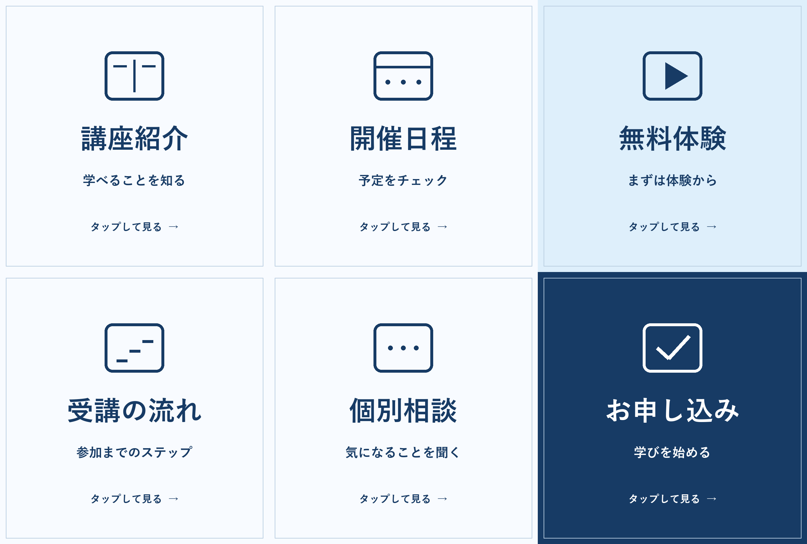

<!doctype html><html lang="ja"><meta charset="utf-8"><meta name="viewport" content="width=device-width,initial-scale=1"><meta name="robots" content="noindex,nofollow"><title>架空講座｜リッチメニュー提案デモ</title><style>*{box-sizing:border-box}body{margin:0;background:#edf3f8;color:#173b65;font-family:system-ui,sans-serif}main{max-width:900px;margin:auto;padding:24px 16px}h1{font-size:clamp(21px,4vw,32px)}p{line-height:1.8}small{display:block;line-height:1.8}.menu{position:relative;margin:24px 0}.menu img{display:block;width:100%;height:auto}.buttons{position:absolute;inset:0;display:grid;grid-template-columns:repeat(3,1fr);grid-template-rows:repeat(2,1fr)}button{border:0;background:transparent;color:transparent;cursor:pointer}button:focus-visible{outline:4px solid #ef8b23;outline-offset:-5px}button:hover{background:#5185ad18}output{display:block;background:white;padding:20px;border-left:4px solid #173b65;line-height:1.8}a{color:#173b65}footer{margin-top:28px;font-size:12px}@media(prefers-reduced-motion:reduce){*{scroll-behavior:auto}}</style><main><small>非公式・架空の提案用デモ / AI支援による図形デザイン</small><h1>知りたいことへ、迷わず。</h1><p>AI・Web・SNS講座を想定した6つの入口。<br>画像内の各項目を押すと、選択した場所を確認できます。</p><div class="menu"><div class="buttons"><button data-title="講座紹介" aria-label="講座紹介のデモ">講座紹介</button><button data-title="開催日程" aria-label="開催日程のデモ">開催日程</button><button data-title="無料体験" aria-label="無料体験のデモ">無料体験</button><button data-title="受講の流れ" aria-label="受講の流れのデモ">受講の流れ</button><button data-title="個別相談" aria-label="個別相談のデモ">個別相談</button><button data-title="お申し込み" aria-label="お申し込みのデモ">お申し込み</button></div></div><output id="result" aria-live="polite">メニューを選択してください。実際のLINE・申込・相談には接続しません。</output><p><a href="rich-menu.png" download>原寸PNG（2500 × 1686px）を見る・保存する</a></p><footer>名称・内容は仮設定です。実在の講座・依頼主とは関係ありません。画像制作のみの提案です。LINE設定・外部リンク・フォーム・決済・配信は未接続。アニメーションは使用していません。</footer></main><script>document.querySelectorAll('button').forEach(b=>b.addEventListener('click',()=>{document.querySelector('#result').textContent=b.dataset.title+'を選択しました。これは選択位置を確認するデモです。リンク先ページ・LINE・送信処理は未接続です。'}));</script></html>